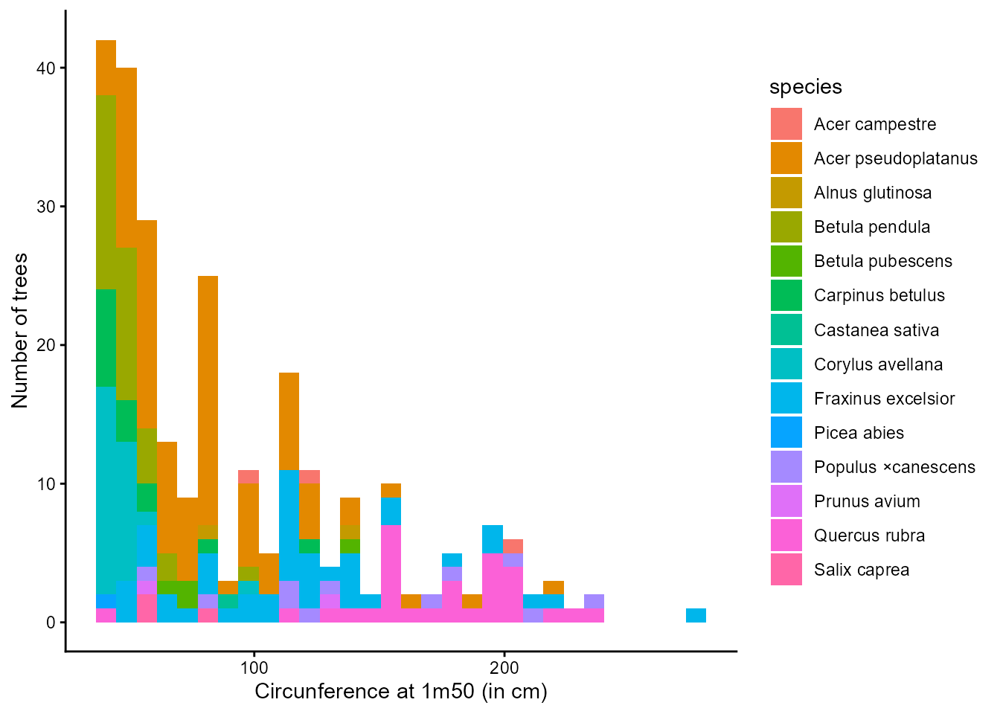
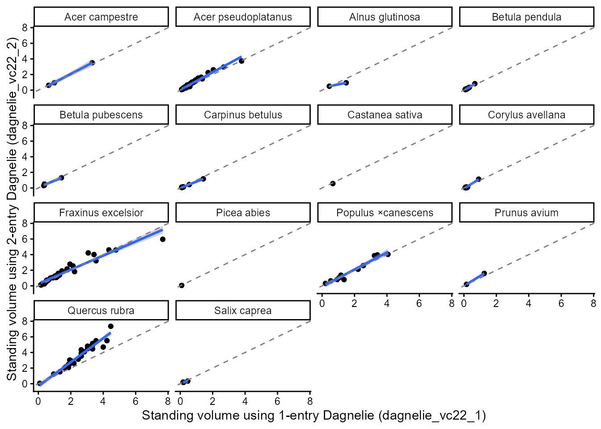

This vignette provides a quick introduction to the main
functionalities of GCubeR using the example dataset included in the
package, GCubeR::data_rondeux.
data("data_rondeux")The dataset comes from a mixed, uneven-aged stand in the Bois Jacques
Rondeux forest near Gembloux (Wallonia, Belgium). Tree diameters were
measured at 1.50 m above ground and converted to circumference
(c150). Total tree height was also measured, allowing the
use of allometric equations that require both circumference and height
(e.g., the Dagnelie two-entry equations).

Dagnelie equations
Most allometric equations require circumference measured at 1.30 m
above ground (c130). Therefore, the first step is to
convert c150 into c130. The
c150_c130() function automatically performs this conversion
when supplied with a data frame containing the variables
c150 and the GCubeR species code.
data <- GCubeR::c150_c130(data_rondeux)The Dagnelie one-entry equations estimate standing volume, (m3 per
tree), using only the circumference at 1.30 m (c130).
data <- GCubeR::dagnelie_vc22_1(data)Because the dataset also includes total tree height, we can use the
Dagnelie two-entry equations, which estimate standing volume from both
circumference at 1.30 m (c130) and total tree height
(htot).
data <- GCubeR::dagnelie_vc22_2(data)The predictions obtained from the one-entry and two-entry equations can then be compared.
For this dataset, the two-entry equations generally predict larger standing volumes than the one-entry equations, particularly for Quercus rubra. This difference likely reflects the fact that the inventories trees are taller than the average trees used to calibrate the one-entry equations, allowing the two-entry equations to better account for their observed height.
